Grondteksten van Gods Woord
tekstgeschiedenis & handschriften per boek
Inhoud
1. Inleiding: wat zijn grondteksten?
Onder grondtekst verstaan we de oorspronkelijke taal waarin een boek van Gods Woord werd geschreven: Hebreeuws en (gedeeltelijk) Aramees voor het Oude Testament, Koinè-Grieks voor het Nieuwe Testament. De originele autografen (de eerste handschriften van Mozes, Jesaja, Paulus enzovoort) zijn niet bewaard gebleven. Wat we wél hebben zijn duizenden afschriften (handschriften, papyri, perkamenten codices) waaruit tekstcritici de oorspronkelijke tekst kunnen reconstrueren.
Voor het OT werken we met de Masoretische Tekst (MT), bewaard door joodse schriftgeleerden (Masoreten) tot in zijn perfecte vorm rond de 10e eeuw na Christus. De Statenvertalers (1637) gebruikten de gedrukte Hebreeuwse tekst van Bomberg/Ben Chajim (1525); moderne uitgaven als BHS en BHQ baseren zich op de Codex Leningradensis (1008 AD).
Voor het NT bestonden voor de Statenvertalers slechts enkele Griekse handschriften (de Textus Receptus, gebaseerd op laat-Byzantijnse mss.). Sinds de 19e eeuw zijn duizenden oudere handschriften ontdekt: ruim 5.800 Griekse NT-handschriften (papyri, unciale en minuskele codices, lectionaria) — meer dan welk ander antiek geschrift ook.
De Open Vertaling volgt voor het OT de BHS/BHQ (Codex Leningradensis) en voor het NT de NA28/ECM; zie ook Uitgangspunten & techniek — brontekstkeuze.
2. Oude Testament — Hebreeuws & Aramees
De 39 OT-boeken zijn oorspronkelijk geschreven in klassiek Hebreeuws, met enkele Aramese gedeelten in Daniël (2:4b–7:28), Ezra (4:8–6:18; 7:12–26), één vers in Jeremia (10:11) en twee Aramese woorden in Genesis (31:47). De volledige Hebreeuwse Schrift is bewaard in:
- Aleppo Codex (ca. 930 AD) — oorspronkelijk volledig, sinds 1947 ca. 60% bewaard.
- Leningrad Codex (1008 AD) — oudste complete Hebreeuwse Schrift, basis van BHS/BHQ.
- Dode Zeerollen (Qumran, ~250 v.Chr.–70 n.Chr.) — fragmenten van bijna alle OT-boeken behalve Esther; 1.000 jaar ouder dan de Masoretische codices.
- Cairo Geniza (vondst 1896, fragmenten 6e–11e eeuw) — duizenden Hebr. fragmenten.
- Septuaginta (LXX, 3e–1e eeuw v.Chr.) — Griekse vertaling, bewaard in NT-codices Sinaiticus & Vaticanus.
| Boek | Taal | Oudste fragment | Oudste volledige versie | Datering | Getuigen | Links |
|---|---|---|---|---|---|---|
| Genesis | Hebreeuws | 4QGen-Exoda, 4QGenb e.a. (DSS) | Aleppo/Leningrad Codex | ~125 v.Chr. (DSS) / 1008 AD (volledig) | ~24 DSS-fragmenten | DSS · Leningrad |
| Exodus | Hebreeuws | 4QpaleoExodm, 4QExoda-k (DSS, paleo-Hebreeuws schrift) | Leningrad Codex (1008) | ~100 v.Chr. | ~21 DSS-fragmenten | DSS |
| Leviticus | Hebreeuws | 11QpaleoLeva, 4QLev (DSS, paleo-schrift) | Leningrad Codex (1008) | ~150–100 v.Chr. | ~17 DSS-fragmenten | DSS |
| Numeri | Hebreeuws | 4QNumb, 2QNum (DSS) | Leningrad Codex (1008) | ~30 v.Chr. | ~12 DSS-fragmenten | DSS |
| Deuteronomium | Hebreeuws | 4QDeuta-q (DSS); zilveren amuletten Ketef Hinnom (Num. 6:24-26 ~600 v.Chr.) | Leningrad Codex (1008) | ~150 v.Chr. (DSS) | ~33 DSS-fragmenten | DSS |
| Jozua | Hebreeuws | 4QJosha, 4QJoshb (DSS) | Leningrad Codex (1008) | ~100 v.Chr. | 2 DSS-fragmenten + LXX | DSS |
| Richteren | Hebreeuws | 4QJudga, 4QJudgb, 1QJudg (DSS) | Leningrad Codex (1008) | ~50–25 v.Chr. | 3 DSS-fragmenten | DSS |
| Ruth | Hebreeuws | 2QRutha, 4QRutha,b (DSS) | Leningrad Codex (1008) | ~50 v.Chr. | 4 DSS-fragmenten | DSS |
| 1 Samuel | Hebreeuws | 4QSama (zeer uitgebreid), 4QSamb,c, 1QSam (DSS) | Leningrad Codex (1008) | ~250 v.Chr. (4QSamb, oudste OT-mss.) | 4 DSS-fragmenten | DSS |
| 2 Samuel | Hebreeuws | 4QSama (zelfde rol als 1 Sam.) | Leningrad Codex (1008) | ~50–25 v.Chr. | samen met 1 Sam. | DSS |
| 1 Koningen | Hebreeuws | 5QKgs, 6QpapKgs (DSS, fragmentarisch) | Leningrad Codex (1008) | ~150 v.Chr. | 3 DSS-fragmenten | DSS |
| 2 Koningen | Hebreeuws | 6QpapKgs (DSS) | Leningrad Codex | ~150 v.Chr. (DSS) | samen met 1 Kon. | DSS |
| 1 Kronieken | Hebreeuws | 4QChr (klein fragment) | Aleppo/Leningrad Codex | ~50 v.Chr. | 1 DSS-fragment | Aleppo |
| 2 Kronieken | Hebreeuws | — (geen DSS) | Aleppo/Leningrad Codex | 930 AD (Aleppo) | — (Masoretisch) | Aleppo |
| Ezra | Hebr. + Aramees (4:8–6:18; 7:12–26) | 4QEzra (klein fragment) | Leningrad Codex | ~50 v.Chr. | 1 DSS-fragment | DSS |
| Nehemia | Hebreeuws | 4QNeh (klein fragment) | Leningrad Codex | ~50 v.Chr. | 1 DSS-fragment | Leningrad |
| Esther | Hebreeuws | — | Aleppo/Leningrad Codex | 930 AD (Aleppo) | — (geen DSS) | Aleppo |
| Job | Hebreeuws | 4QpaleoJobc, 4QJoba,b, 11QtgJob (Aramees Targum) | Leningrad Codex (1008) | ~50 v.Chr. | 4 DSS-fragmenten | DSS |
| Psalmen | Hebreeuws | 11QPsa (Grote Psalmenrol), 4QPsa-w (DSS) — meest geattesteerde OT-boek | Leningrad Codex (1008) | ~30–50 n.Chr. | ~40 DSS-fragmenten | 11QPsa · DSS |
| Spreuken | Hebreeuws | 4QProva, 4QProvb (DSS, fragmentarisch) | Leningrad Codex (1008) | ~50 v.Chr. | 2 DSS-fragmenten | DSS |
| Prediker | Hebreeuws | 4QQoha, 4QQohb (DSS) | Leningrad Codex (1008) | ~175–150 v.Chr. (4QQoha) | 2 DSS-fragmenten | DSS |
| Hooglied | Hebreeuws | 4QCanta,b,c, 6QCant (DSS) | Leningrad Codex (1008) | ~30 v.Chr. | 4 DSS-fragmenten | DSS |
| Jesaja | Hebreeuws | 1QIsaa (Grote Jesajarol — volledig, 7,3 m lang), 1QIsab, 4QIsaa-r | Leningrad Codex (1008) | ~125 v.Chr. (1QIsaa) | ~22 DSS-fragmenten | 1QIsaa · DSS |
| Jeremia | Hebr. + 1 vers Aramees (10:11) | 4QJera-e, 2QJer (DSS); LXX-versie ~12% korter dan MT | Leningrad Codex (1008) | ~200 v.Chr. (4QJera) | 6 DSS-fragmenten | DSS |
| Klaagliederen | Hebreeuws | 3QLam, 4QLam, 5QLama,b (DSS) | Leningrad Codex (1008) | ~30 v.Chr. | 4 DSS-fragmenten | DSS |
| Ezechiël | Hebreeuws | 4QEzeka,b,c, 11QEzek, MasEzek (DSS) | Leningrad Codex (1008) | ~50 v.Chr. | 6 DSS-fragmenten | DSS |
| Daniël | Hebr. + Aramees (2:4b–7:28) | 4QDana-e, 1QDana,b, 6QDan (DSS) | Leningrad Codex (1008) | ~125 v.Chr. (vóór veronderstelde 2e-eeuwse compositie) | 8 DSS-fragmenten | DSS |
| Hosea | Hebreeuws | 4QXIIa,c,d,g (Twaalf-profetenrollen, DSS) | Leningrad Codex (1008) | ~150 v.Chr. | ~8 DSS-fragmenten (Twaalf samen) | DSS |
| Joël | Hebreeuws | 4QXIIc,g, MurXII (DSS) | Leningrad Codex (1008) | ~150 v.Chr. | 2 DSS-fragmenten | DSS |
| Amos | Hebreeuws | 4QXIIc,g, MurXII, 5QAmos (DSS) | Leningrad Codex (1008) | ~150 v.Chr. | 3 DSS-fragmenten | DSS |
| Obadja | Hebreeuws | 4QXIIg, MurXII (DSS) | Leningrad Codex (1008) | ~50 v.Chr. | 2 DSS-fragmenten | DSS |
| Jona | Hebreeuws | 4QXIIa,f,g, MurXII (DSS) | Leningrad Codex (1008) | ~150 v.Chr. | 4 DSS-fragmenten | DSS |
| Micha | Hebreeuws | 4QXIIg, MurXII, 8ḤevXIIgr (Grieks!) | Leningrad Codex (1008) | ~50 v.Chr. | 3 DSS-fragmenten | DSS |
| Nahum | Hebreeuws | MurXII, 4QpNah (Pesher), 4QXIIg | Leningrad Codex (1008) | ~50 v.Chr. | 2 DSS-fragmenten | DSS |
| Habakuk | Hebreeuws | 1QpHab (Habakuk-pesher, beroemd), MurXII, 8ḤevXIIgr | Leningrad Codex (1008) | ~50 v.Chr. (1QpHab) | 3 DSS-fragmenten | 1QpHab |
| Zefanja | Hebreeuws | 4QXIIb,g, MurXII, 8ḤevXIIgr | Leningrad Codex (1008) | ~150 v.Chr. | 3 DSS-fragmenten | DSS |
| Haggaï | Hebreeuws | 4QXIIb,e, MurXII (DSS) | Leningrad Codex (1008) | ~150 v.Chr. | 2 DSS-fragmenten | DSS |
| Zacharia | Hebreeuws | 4QXIIa,e,g, MurXII, 8ḤevXIIgr | Leningrad Codex (1008) | ~150 v.Chr. | 4 DSS-fragmenten | DSS |
| Maleachi | Hebreeuws | 4QXIIa (Twaalf-profetenrol) | Leningrad Codex (1008) | ~150 v.Chr. | 1 DSS-fragment | DSS |
3. Apocriefen — gemengde tekstgeschiedenis
De apocriefen (in de Rooms-Katholieke en Oosters-Orthodoxe canon: deuterocanonieke boeken) zijn niet door alle kerken erkend als geïnspireerd. De Statenvertalers gaven ze plaats tussen OT en NT met een waarschuwende voorrede. Ze zijn overgeleverd in verschillende talen: enkele oorspronkelijk in Hebreeuws of Aramees, andere in Grieks. De volledige tekst is bewaard in de grote LXX-codices (Vaticanus, Sinaiticus, Alexandrinus).
| Boek | Taal | Oudste fragment | Oudste volledige versie | Datering | Getuigen | Links |
|---|---|---|---|---|---|---|
| 3 Ezra | Grieks (vert. uit Hebr/Aram) | — | Codex Vaticanus, Alexandrinus (LXX) | 4e–5e eeuw | ~25 LXX-handschriften | Wiki |
| 4 Ezra | Latijn (verloren Hebr/Grieks origineel) | — | Codex Sangermanensis (Vulgaat); Syrische, Ethiopische, Armeense, Arabische versies | 9e eeuw (Sangermanensis) | ~10 Latijnse mss. + Oosterse versies | Wiki |
| Tobit | Aramees / Hebreeuws (oorspr.) | 4QToba-d (Aramees), 4QTobe (Hebreeuws); Grieks in Sinaiticus & Vaticanus | LXX-codices (Vaticanus/Sinaiticus/Alexandrinus, 4e–5e eeuw) | ~100 v.Chr. (DSS) | 5 DSS-fragmenten + LXX | DSS · Sinaiticus |
| Judith | Grieks (mogelijk vert. uit Hebr.) | — | Codex Vaticanus, Sinaiticus, Alexandrinus | 4e eeuw | ~12 LXX-handschriften | Wiki |
| Boek der Wijsheid | Grieks (oorspr.) | — | Codex Vaticanus, Sinaiticus, Alexandrinus | 4e eeuw | ~30 LXX-handschriften | Sinaiticus |
| Jezus Sirach | Hebreeuws (oorspr.); Grieks (kleinzoon, ~132 v.Chr.) | Cairo Geniza Hebr. (~2/3 bewaard); Masada-rol (MasSir, Hebr.); 2QSir, 11QPsa (DSS) | LXX-codices (Vaticanus/Sinaiticus/Alexandrinus, 4e–5e eeuw) | ~25 v.Chr. (Masada) | ~6 Hebr. fragmenten + LXX | DSS |
| Baruch | Grieks (mogelijk vert. uit Hebr.) | — | Codex Vaticanus, Alexandrinus (Sinaiticus mist Bar.) | 4e eeuw | ~20 LXX-handschriften | Wiki |
| Esther (apocrief) | Grieks (uitbreidingen op Hebr. Esther) | — | Codex Vaticanus, Sinaiticus, Alexandrinus | 4e eeuw | in alle LXX-Esther mss. | Wiki |
| Gebed van Azaria | Grieks (deel van LXX-Daniël 3) | — | Codex Vaticanus, Sinaiticus (LXX-Daniël) | 4e eeuw | in alle LXX-Daniël mss. | Sinaiticus |
| Gezang in de vuuroven | Grieks (deel van LXX-Daniël 3) | — | Codex Vaticanus, Sinaiticus (LXX-Daniël) | 4e eeuw | in alle LXX-Daniël mss. | Sinaiticus |
| Susanna | Grieks (uitbreiding op LXX-Daniël) | — | Codex Vaticanus, Sinaiticus, Alexandrinus; Theodotion-versie | 4e eeuw | in alle LXX-Daniël mss. | Wiki |
| Bel en de draak | Grieks (uitbreiding op LXX-Daniël) | — | Codex Vaticanus, Sinaiticus, Alexandrinus | 4e eeuw | in alle LXX-Daniël mss. | Wiki |
| Gebed van Manasse | Grieks (oorspr. omstreden) | — | Codex Alexandrinus (in Oden); Apostolische Constituties | 5e eeuw | ~12 mss. | Wiki |
| 1 Makkabeeën | Grieks (vert. uit Hebr., origineel verloren) | — | Codex Sinaiticus, Alexandrinus, Venetus (Vat. mist Mak.) | 4e eeuw (Sinaiticus) | ~8 LXX-handschriften | Sinaiticus |
| 2 Makkabeeën | Grieks (oorspr.) | — | Codex Alexandrinus, Venetus (Vat. mist Mak.) | 5e eeuw | ~8 LXX-handschriften | Wiki |
| 3 Makkabeeën | Grieks (oorspr.) | — | Codex Alexandrinus, Venetus (niet in Vulgaat noch SV-canonieke apocr. lijst, wel in OV) | 5e eeuw | ~6 LXX-handschriften | Wiki |
| Henoch | Ge'ez (Aram./Hebr. origineel) | 4QHena-g, 4QHenastr (Aramees, DSS); Griekse fragmenten (Akhmim, Syncellus) | Ethiopische mss. (o.a. Bodleian, Kebrān; 15e–18e eeuw) | ~200 v.Chr. (4QHenoch) | ~11 Aramese DSS + Ge'ez | Handschriften · Wiki |
| Jubileeën | Ge'ez (Hebr. origineel) | 4QJuba-h, 1QJub, 2QJub, 11QJub (Hebreeuws, DSS) | Ethiopische mss. (15e–16e eeuw) | ~100 v.Chr. (DSS) | ~15 Hebr. DSS + Ge'ez | Wiki |
| 1 Meqabyan | Ge'ez (oorspr.) | — (alleen Ge'ez) | Ethiopische mss. (late middeleeuwen) | Ge'ez-canon | Ethiopische traditie | Wiki |
| 2 Meqabyan | Ge'ez (oorspr.) | — (alleen Ge'ez) | Ethiopische mss. (late middeleeuwen) | Ge'ez-canon | Ethiopische traditie | Wiki |
| 3 Meqabyan | Ge'ez (oorspr.) | — (alleen Ge'ez) | Ethiopische mss. (late middeleeuwen) | Ge'ez-canon | Ethiopische traditie | Wiki |
| 4 Baruch | Ge'ez / Grieks (Paralipomena) | Griekse mss. (Paraleipomena Jeremiou); geen vroege fragmenten | Ethiopische mss. (Ge'ez) + Griekse recensie | 10e–15e eeuw (Grieks); Ge'ez later | Ethiopische + Griekse traditie | Wiki |
4. Nieuwe Testament — Grieks
Het Nieuwe Testament is geschreven in Koinè-Grieks (de algemene volkstaal van het Romeinse Rijk in de 1e eeuw). De NT-tekst is uitzonderlijk goed overgeleverd: ruim 5.800 Griekse handschriften (waarvan ca. 140 papyri uit de 2e–4e eeuw), plus ruim 10.000 Latijnse en duizenden Syrische, Koptische, Armeense en andere oude vertalingen. De vroegste fragmenten dateren uit minder dan een eeuw na de oorspronkelijke compositie.
Belangrijke vroege papyri:
- P52 (Rylands, ~125 AD) — fragment Joh. 18; oudste NT-handschrift.
- P66 (Bodmer II, ~200 AD) — bijna volledig Johannes-evangelie.
- P75 (Bodmer XIV-XV, ~175–225 AD) — Lukas + Joh.
- P45 (Chester Beatty I, ~250 AD) — vier evangeliën + Hand.
- P46 (Chester Beatty II, ~200 AD) — Paulinische brieven + Hebr.
| Boek | Taal | Oudste fragment | Oudste volledige versie | Datering | Getuigen | Links |
|---|---|---|---|---|---|---|
| Mattheüs | Koinè-Grieks | P104 (~150 AD); P64/67, P77 | Sinaiticus & Vaticanus | ~150 AD (P104) | ~24 papyri + alle majuskels | Sinaiticus · NTVMR |
| Markus | Koinè-Grieks | P45 (~250 AD) | Sinaiticus & Vaticanus | ~250 AD (P45) | ~5 papyri + alle majuskels | Sinaiticus |
| Lukas | Koinè-Grieks | P75 (~200 AD), P4 (~200 AD) | Sinaiticus & Vaticanus | ~200 AD (P75) | ~10 papyri + alle majuskels | CSNTM |
| Johannes | Koinè-Grieks | P52 (~125 AD), P66 (~200 AD), P75 | Sinaiticus & Vaticanus (4e eeuw) | ~125 AD (P52, oudste NT-fragment) | ~30 papyri + alle majuskels | P52 · Sinaiticus |
| Handelingen | Koinè-Grieks | P45 (~250 AD), P74 | Sinaiticus, Vaticanus, Bezae | ~250 AD (P45) | ~14 papyri + alle majuskels | Bezae · Sinaiticus |
| Romeinen | Koinè-Grieks | P46 (~200 AD) | Sinaiticus & Vaticanus | ~200 AD (P46) | ~6 papyri + alle majuskels | P46 · Sinaiticus |
| 1 Korintiërs | Koinè-Grieks | P46 (~200 AD); P14, P15, P34 | Sinaiticus & Vaticanus (4e eeuw) | ~200 AD (P46) | ~6 papyri + alle majuskels | P46 |
| 2 Korintiërs | Koinè-Grieks | P46 (~200 AD); P34, P124 | Sinaiticus & Vaticanus (4e eeuw) | ~200 AD (P46) | ~3 papyri + alle majuskels | P46 |
| Galaten | Koinè-Grieks | P46 (~200 AD); P51, P99 | Sinaiticus & Vaticanus (4e eeuw) | ~200 AD (P46) | ~3 papyri + alle majuskels | P46 |
| Efeziers | Koinè-Grieks | P46 (~200 AD); P49 | Sinaiticus & Vaticanus (4e eeuw) | ~200 AD (P46) | ~2 papyri + alle majuskels | P46 |
| Filippenzen | Koinè-Grieks | P46 (~200 AD); P16, P61 | Sinaiticus & Vaticanus (4e eeuw) | ~200 AD (P46) | ~3 papyri + alle majuskels | P46 |
| Kolossenzen | Koinè-Grieks | P46 (~200 AD); P61 | Sinaiticus & Vaticanus (4e eeuw) | ~200 AD (P46) | ~2 papyri + alle majuskels | P46 |
| 1 Thessalonicenzen | Koinè-Grieks | P46 (~200 AD); P30, P65 | Sinaiticus & Vaticanus (4e eeuw) | ~200 AD (P46) | ~3 papyri + alle majuskels | P46 |
| 2 Thessalonicenzen | Koinè-Grieks | P30 (~200 AD) | Sinaiticus & Vaticanus | ~200 AD (P30) | ~2 papyri + alle majuskels | Sinaiticus |
| 1 Timotheüs | Koinè-Grieks | — | Codex Sinaiticus (4e eeuw) | ~350 AD (Sinaiticus) | — (geen papyri) + alle majuskels behalve B | Sinaiticus |
| 2 Timotheüs | Koinè-Grieks | — | Codex Sinaiticus (4e eeuw) | ~350 AD (Sinaiticus) | — (geen papyri) + alle majuskels behalve B | Sinaiticus |
| Titus | Koinè-Grieks | P32 (~200 AD) | Sinaiticus, Alexandrinus | ~200 AD (P32) | 1 papyrus + alle majuskels behalve B | P32 |
| Filemon | Koinè-Grieks | P87 (~125 AD), P139 | Sinaiticus, Vaticanus | ~125 AD (P87) | 2 papyri + alle majuskels | P87 |
| Hebreeën | Koinè-Grieks | P46 (~200 AD), P12, P13, P17 | Sinaiticus & Vaticanus (4e eeuw) | ~200 AD (P46) | ~5 papyri + alle majuskels | P46 |
| Jakobus | Koinè-Grieks | P20 (~250 AD), P23 (~225 AD), P54, P74, P100 | Sinaiticus & Vaticanus (4e eeuw) | ~225 AD (P23) | ~6 papyri + alle majuskels | P23 |
| 1 Petrus | Koinè-Grieks | P72 (~300 AD); P81, P125 | Sinaiticus & Vaticanus (4e eeuw) | ~300 AD (P72) | ~3 papyri + alle majuskels | P72 |
| 2 Petrus | Koinè-Grieks | P72 (~300 AD) | Sinaiticus & Vaticanus | ~300 AD (P72) | 1 papyrus + alle majuskels | P72 |
| 1 Johannes | Koinè-Grieks | P9 (~250 AD) | Sinaiticus & Vaticanus | ~250 AD (P9) | 1 papyrus + alle majuskels | P9 |
| 2 Johannes | Koinè-Grieks | — | Sinaiticus (4e eeuw) | ~350 AD (Sinaiticus) | — (geen papyri) + alle majuskels | Sinaiticus |
| 3 Johannes | Koinè-Grieks | — | Sinaiticus (4e eeuw) | ~350 AD (Sinaiticus) | — (geen papyri) + alle majuskels | Sinaiticus |
| Judas | Koinè-Grieks | P72 (~300 AD), P78 (~300 AD) | Sinaiticus & Vaticanus (4e eeuw) | ~300 AD (P72) | 2 papyri + alle majuskels | P72 |
| Openbaring | Koinè-Grieks | P98 (~150 AD), P115 (~250 AD), P47 (~250 AD) | Sinaiticus & Vaticanus (4e eeuw) | ~150 AD (P98, fragment) | ~7 papyri + Sinaiticus, Alexandrinus (Vat. mist Op.) | P47 · Sinaiticus |
5. Belangrijkste codices
De volgende handschriften zijn de fundering van de moderne tekstkritiek. Vrijwel alle kritische edities (BHS, BHQ, NA28, ECM) baseren zich primair op deze getuigen.
De foto's hieronder zijn afkomstig van Wikimedia Commons en behoren tot het publieke domein. Klik op een foto voor de bronpagina en hoge-resolutie versie.
Hebreeuwse Schrift
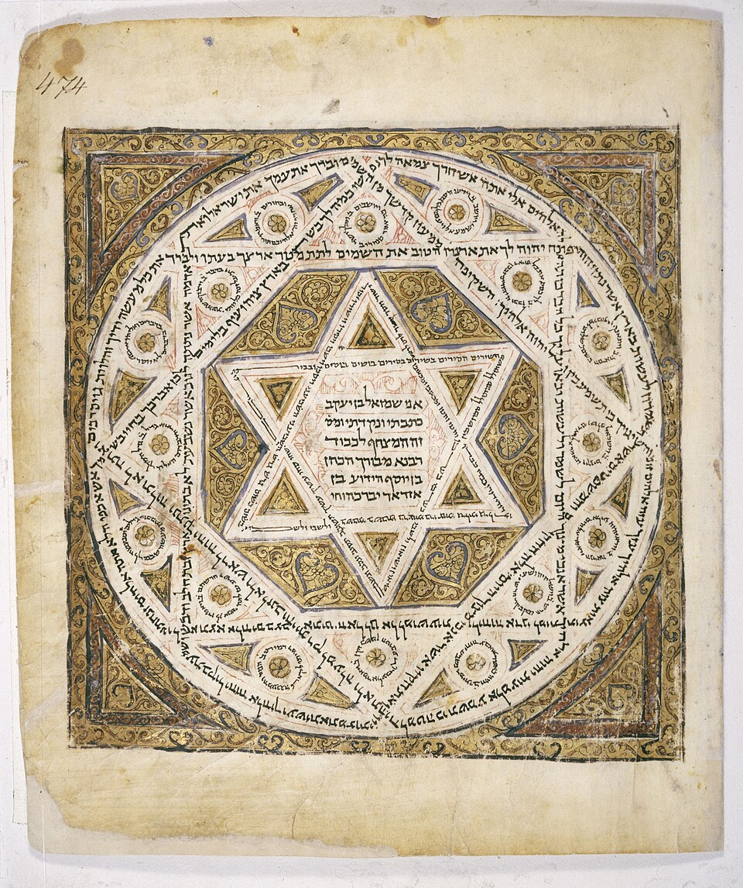
Codex Leningradensis (B19A)
Oudste volledige Hebreeuwse Schrift. Geschreven door Samuel ben Jacob in Caïro, gevocaliseerd volgens de Ben Asjer-traditie. Basis van de BHS (1977) en de BHQ (sinds 2004). Online: Internet Archive (facsimile).
- Bevindt zich: Russische Nationale Bibliotheek, Sint-Petersburg
- Ontdekt/verworven: verworven door Abraham Firkovich (1838), Caïro
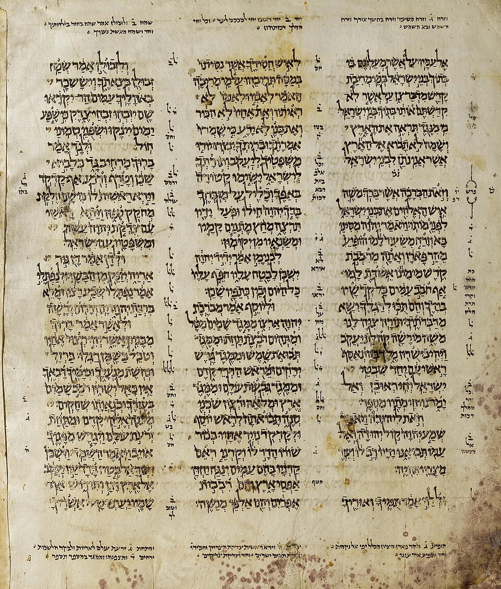
Aleppo Codex
Door de Masoreten beschouwd als de meest perfecte tekst (Aaron ben Asjer corrigeerde de vocalisatie). Oorspronkelijk de volledige Hebreeuwse Schrift; tijdens de pogrom van Aleppo (1947) ging ca. 40% verloren (waaronder vrijwel de hele Tora). Gebruikt door Maimonides als referentie. Online: aleppocodex.org.
- Bevindt zich: Israël Museum, Jeruzalem
- Ontdekt/verworven: in 1957 door kaashandelaar Murad Faham vanuit Aleppo naar Israël gesmokkeld
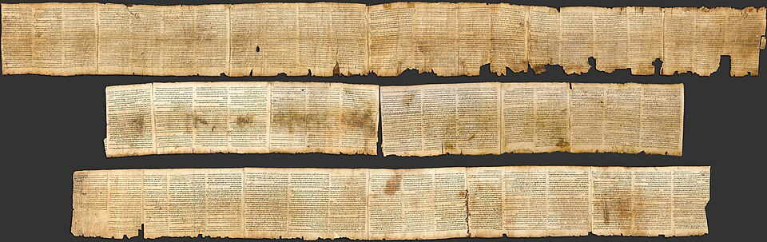
Dode Zeerollen (Qumran)
Tussen 1947 en 1956 ontdekt in elf grotten bij Qumran. Bevatten fragmenten van vrijwel alle OT-boeken (behalve Esther) — circa 1.000 jaar ouder dan de Masoretische codices. Bevestigen de opmerkelijke stabiliteit van de Hebreeuwse tekstoverlevering. Online: Leon Levy Dead Sea Scrolls Digital Library.
- Bevindt zich: Israël Museum (Heiligdom van het Boek), Jeruzalem
- Ontdekt/verworven: gevonden door een bedoeïenenherder (Dode Zeerollen) in 1947, Qumran
- Bewijs: Live Science — “70 Years After Dead Sea Scrolls Were Found” (2017)
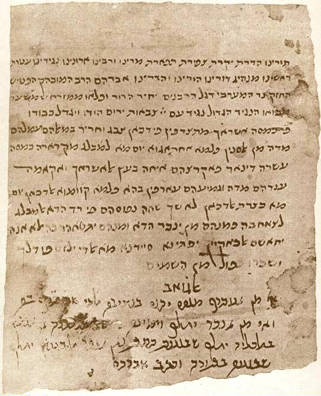
Cairo Geniza
Genizah (opslag voor versleten heilige geschriften) van de Ben Ezra-synagoge in Caïro. Bevat ~300.000 joodse manuscripten waaronder de oudste Hebreeuwse fragmenten van Jezus Sirach en verschillende OT-tekstgetuigen. Online: Cambridge Digital Library.
- Bevindt zich: Universiteitsbibliotheek van Cambridge e.a.
- Ontdekt/verworven: ontsloten door Solomon Schechter (1896–97), Ben Ezra-synagoge, Caïro
Griekse Schrift (LXX + NT)

Codex Sinaiticus (א, 01)
Een van de twee oudste volledige Griekse Schriften. Bevat het complete NT en grote delen van de LXX (incl. apocriefen) plus Barnabas en de Herder van Hermas. Ontdekt door Tischendorf in 1844 op de Sinaï. Online digitaal hersamengesteld: codexsinaiticus.org.
- Bevindt zich: British Library, Londen (+ Leipzig, Sinaï, Sint-Petersburg)
- Ontdekt/verworven: ontdekt door Konstantin von Tischendorf (1844/1859), Katharinaklooster, Sinaï
- Bewijs: CNN — “Oldest known Bible goes online” (2009)
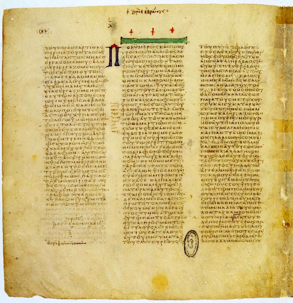
Codex Vaticanus (B, 03)
Mogelijk de oudste volledige Griekse Schrift. Mist Hebr. 9:14–13:25, Pastoraalbrieven, Filemon en Openbaring. Door velen als de tekstkritisch hoogwaardigste majuskel beschouwd. Online: DigiVatLib (facsimile).
- Bevindt zich: Vaticaanse Bibliotheek, Vaticaanstad
- Ontdekt/verworven: geen bekende ontdekker; al vermeld in de Vaticaanse catalogus van 1475
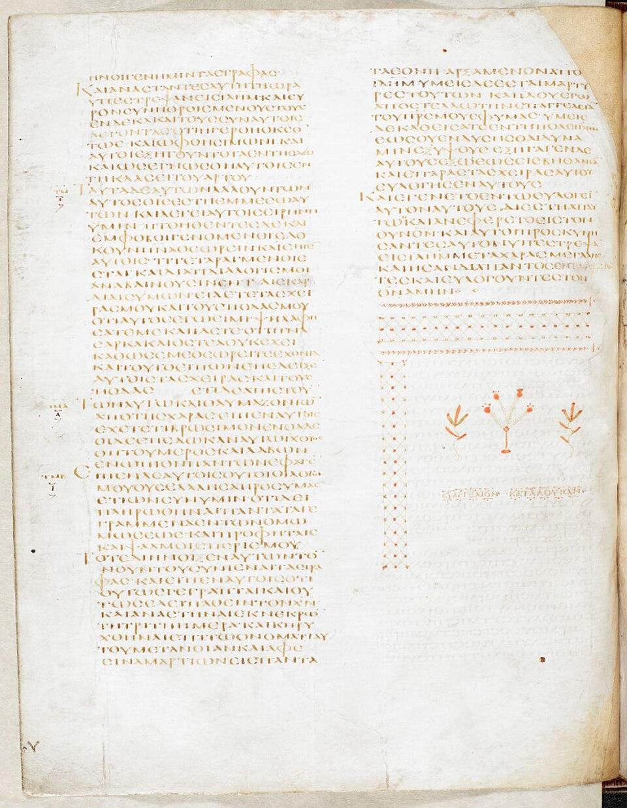
Codex Alexandrinus (A, 02)
Bevat vrijwel volledige LXX (incl. apocriefen + 3 & 4 Makk.) en NT (mist enkele bladzijden van Mt., Joh. en 2 Kor.). Plus 1 & 2 Clemens. Geschenk van patriarch Cyrillus Lucaris aan koning Karel I in 1627. Online: British Library.
- Bevindt zich: British Library, Londen
- Ontdekt/verworven: in 1627 door patriarch Cyrillus Lucaris aan koning Karel I geschonken, via Constantinopel
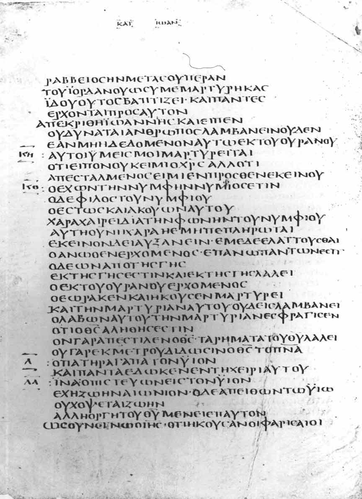
Codex Bezae Cantabrigiensis (D, 05)
Tweetalig (Grieks + Latijn), bevat de evangeliën en Handelingen. Bekend om de Westerse tekst, met opvallende uitbreidingen in Handelingen (~10% langer dan Sinaiticus/Vaticanus). Door Theodorus Beza geschonken aan Cambridge in 1581. Online: Cambridge Digital Library.
- Bevindt zich: Universiteitsbibliotheek van Cambridge
- Ontdekt/verworven: in 1581 door Theodorus Beza aan Cambridge geschonken; eerder klooster te Lyon
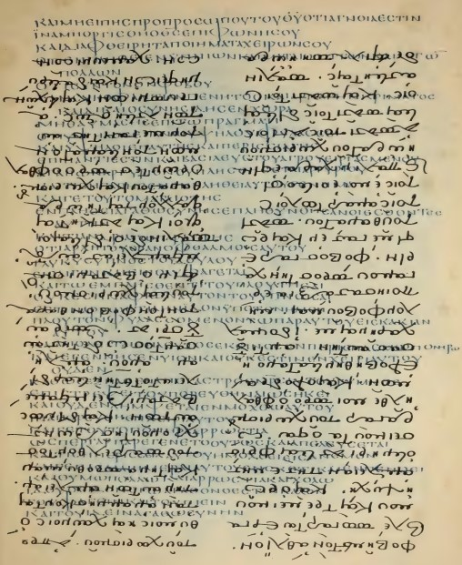
Codex Ephraemi Rescriptus (C, 04)
Palimpsest: de oorspronkelijke Schrifttekst werd in de 12e eeuw afgeschraapt om er preken van Ephraem de Syriër overheen te schrijven. Bevat fragmenten van vrijwel het hele NT (alle boeken behalve 2 Tess. en 2 Joh.) en delen van de LXX. In 1834–1845 leesbaar gemaakt door Tischendorf. Wikipedia: Codex Ephraemi Rescriptus.
- Bevindt zich: Bibliothèque nationale de France, Parijs
- Ontdekt/verworven: palimpsest ontcijferd door Konstantin von Tischendorf (1840–43), Parijs
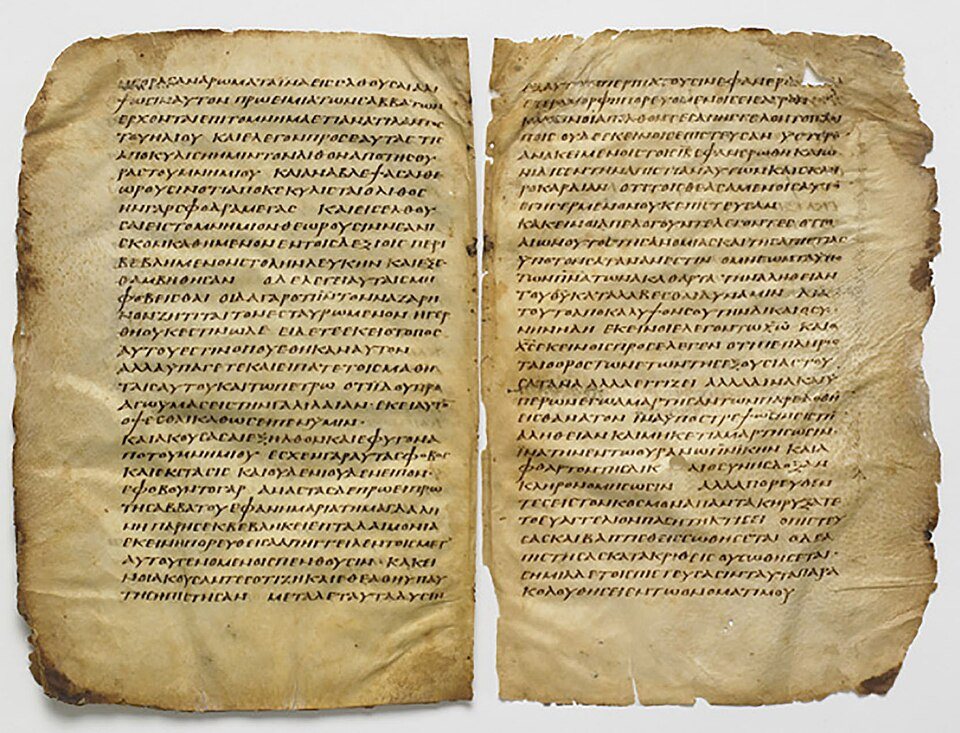
Codex Washingtonianus (W, 032)
Ook bekend als de 'Freer Gospels'. Bevat alle vier evangeliën in de Westerse volgorde (Mt., Joh., Lk., Mk.). Tekstkritisch bijzonder vanwege gemengd karakter — bijna elk evangelie vertegenwoordigt een andere tekstfamilie. Bevat het unieke 'Freer-logion' na Mk. 16:14. Wikipedia: Codex Washingtonianus.
- Bevindt zich: Smithsonian, Freer Gallery of Art, Washington D.C.
- Ontdekt/verworven: in 1906 gekocht door Charles Lang Freer, Gizeh (Egypte)
- Bewijs: Smithsonian Magazine — “The Man Who Viewed the Bible as Art”
Overige tekstgetuigen
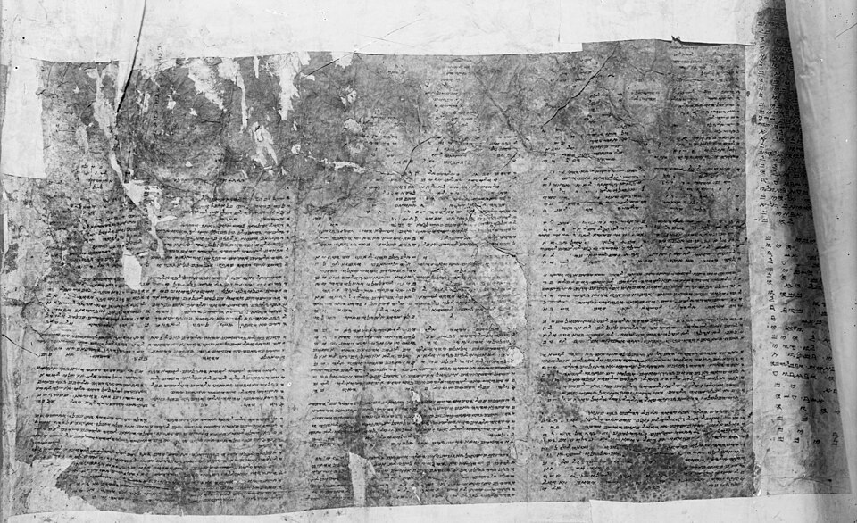
Samaritaanse Pentateuch
Eigen Hebreeuwse versie van Genesis t/m Deuteronomium, in Paleo-Hebreeuws schrift, overgeleverd door de Samaritaanse gemeenschap. Ongeveer 6.000 verschillen met de Masoretische Tekst, waarvan ~1.900 ook door de LXX worden gedeeld — een belangrijke tekstkritische getuige van een vroege (proto-samaritaanse) tekstfamilie. Wikipedia: Samaritan Pentateuch.
- Bevindt zich: Samaritaanse gemeenschap, Nablus
- Ontdekt/verworven: altijd bewaard binnen de Samaritaanse gemeenschap; westers bekend sinds 1616 (Pietro della Valle)
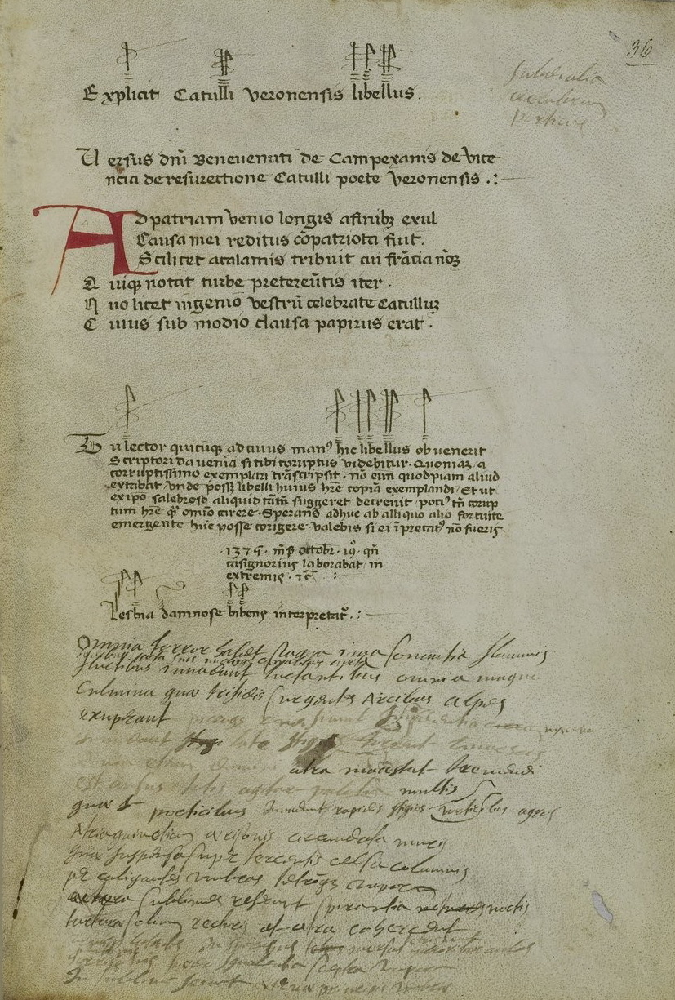
Codex Sangermanensis
Latijnse Vulgaat-codex, belangrijk als tekstgetuige van 4 Ezra (2 Esdras) — een apocrief boek waarvan het Griekse en Hebreeuwse origineel verloren zijn gegaan.
- Bevindt zich: Bibliothèque nationale de France, Parijs
- Ontdekt/verworven: genoemd naar de abdij van Saint-Germain-des-Prés te Parijs, waar de codex bewaard werd
NT-papyri (vroegste getuigen)
_recto_John_18,_31-33.jpg)
P52 — Rylands fragment
Het oudste bewaarde fragment van het Nieuwe Testament. Klein perkament-codex-fragment (8,9 × 6 cm) met aan recto Joh. 18:31–33 en aan verso Joh. 18:37–38. Wikipedia: Papyrus 52.
- Bevindt zich: John Rylands Library, Manchester
- Ontdekt/verworven: in 1920 in Egypte verworven, in 1934 herkend door Colin H. Roberts
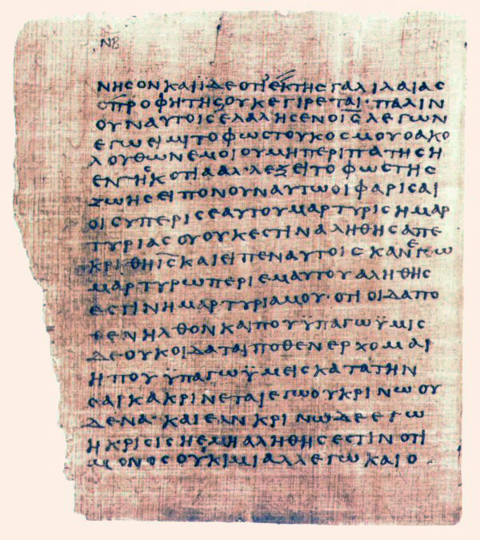
P66 — Bodmer II
Bijna-volledig Johannes-evangelie (Joh. 1:1 – 14:26 + fragmenten tot 21:9). Bevat talrijke correcties — waardevol voor scribale studie. Wikipedia: Papyrus 66.
- Bevindt zich: Bibliotheca Bodmeriana, Cologny (Genève)
- Ontdekt/verworven: in 1952 bij Dishna (Egypte) gevonden, verworven door Martin Bodmer
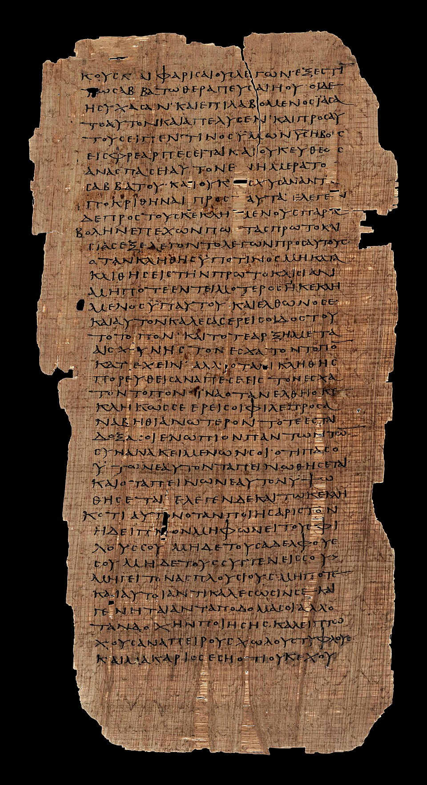
P75 — Bodmer XIV–XV
Bevat het grootste deel van Lukas (3:18–24:53) en Johannes (1:1–15:8). Tekstkritisch van fundamenteel belang: tekst bijna identiek aan Codex Vaticanus, wat aantoont dat de Alexandrijnse tekstvorm teruggaat tot vóór 200 AD. Wikipedia: Papyrus 75.
- Bevindt zich: Vaticaanse Bibliotheek, Vaticaanstad
- Ontdekt/verworven: onderdeel van de Bodmer-papyri (Martin Bodmer, 1952), Dishna; in 2007 naar het Vaticaan
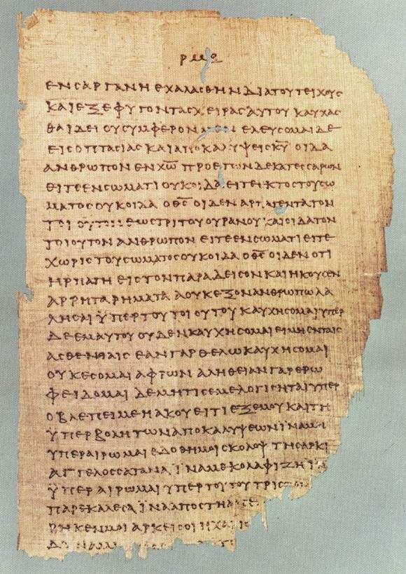
P46 — Chester Beatty II
Oudste bekende verzameling van de Paulinische brieven in codex-vorm. Bevat Romeinen, Hebreeën (!), 1–2 Korintiërs, Efeziërs, Galaten, Filippenzen, Kolossenzen, 1 Tess. — bewijst een vroege Alexandrijnse tekstvorm van Paulus. Wikipedia: Papyrus 46.
- Bevindt zich: Chester Beatty Library, Dublin (+ Univ. of Michigan)
- Ontdekt/verworven: ca. 1930–31 in Egypte verworven door Alfred Chester Beatty; bekendgemaakt in 1931
- Bewijs: F.G. Kenyon — verslag van de aankondiging (19 nov. 1931)
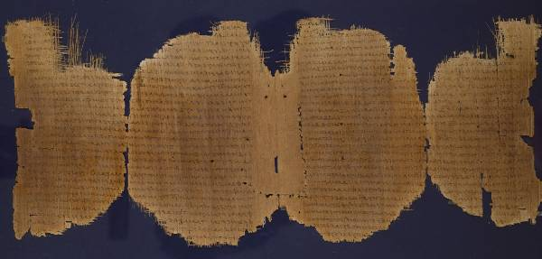
P45— Chester Beatty I
Oudste handschrift dat de vier evangeliën én Handelingen in één codex samenbrengt. Bevat delen van Mattheüs, Markus, Lukas, Johannes en Handelingen.
- Bevindt zich: Chester Beatty Library, Dublin
- Ontdekt/verworven: ca. 1930–31 in Egypte verworven door Alfred Chester Beatty; bekendgemaakt in 1931
- Bewijs: F.G. Kenyon — verslag van de aankondiging (19 nov. 1931)
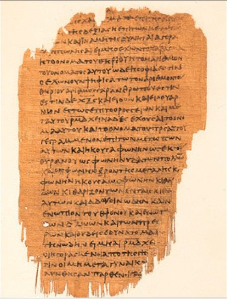
P47— Chester Beatty III
Oudste substantiële handschrift van het boek Openbaring; bevat Op. 9:10–17:2.
- Bevindt zich: Chester Beatty Library, Dublin
- Ontdekt/verworven: ca. 1930–31 in Egypte verworven door Alfred Chester Beatty
- Bewijs: F.G. Kenyon — verslag van de aankondiging (19 nov. 1931)
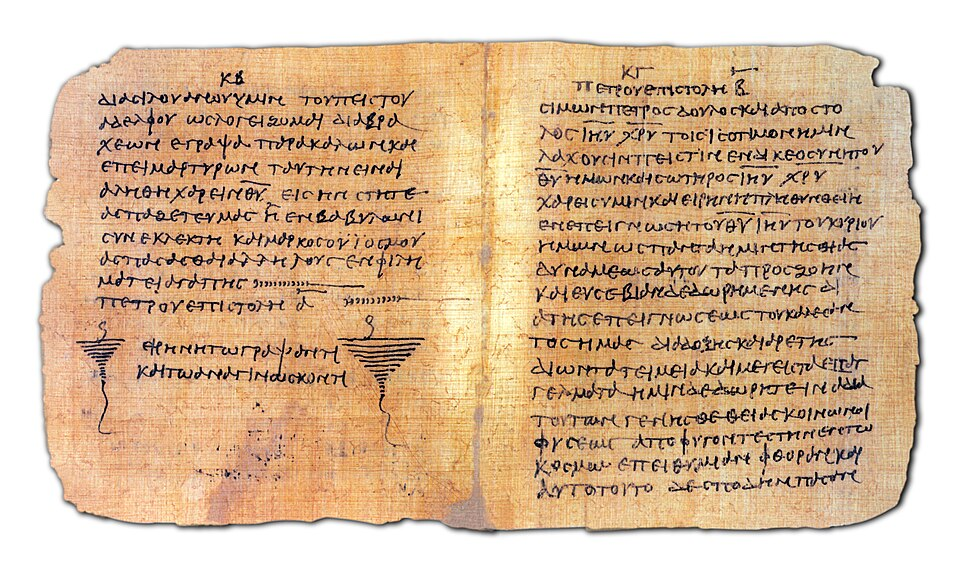
P72— Bodmer VII–VIII
Oudste bekende tekst van 1 en 2 Petrus en Judas, in één codex samengebracht met andere vroegchristelijke geschriften.
- Bevindt zich: Vaticaanse Bibliotheek, Vaticaanstad
- Ontdekt/verworven: onderdeel van de Bodmer-papyri (Martin Bodmer, 1952), gevonden bij Dishna (Egypte)
Ethiopische (Ge'ez) traditie
Enkele boeken van Gods Woord zijn vooral of uitsluitend bewaard gebleven in het Ge'ez, de klassieke taal van de Ethiopisch-Orthodoxe Kerk — waaronder Henoch, Jubileeën en de Meqabyan-boeken.
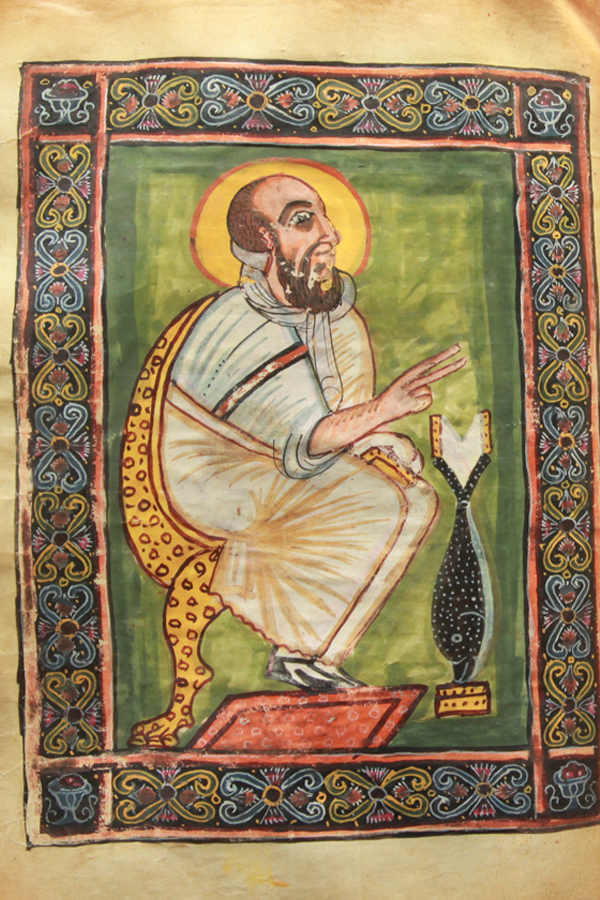
Garima-evangeliën(Abba Garima)
De oudste bewaarde Ethiopische (Ge'ez) evangeliën én tevens 's werelds oudste geïllustreerde christelijke handschrift. Geschreven op dik geitenperkament; koolstofdatering (Oxford, 2010) plaatst het rond 330–650 n.Chr.
- Bevindt zich: Abba Garima-klooster, bij Adwa (Tigray), Ethiopië
- Ontdekt/verworven: eeuwenlang in het klooster bewaard; in 2010 in Oxford koolstofgedateerd op 330–650 n.Chr.
- Bewijs: Medievalists.net — “Garima Gospels found to be oldest surviving Christian illustrated manuscripts” (2010)
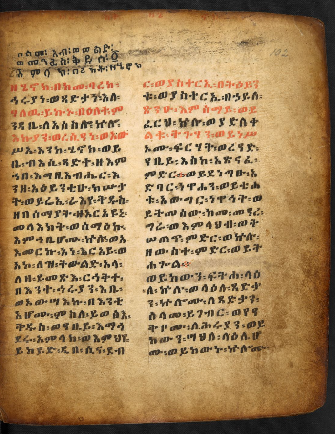
Ethiopische Henoch(Mäṣḥafä Henok)
Het boek Henoch (1 Henoch) is volledig alléén in het Ge'ez overgeleverd; de Ethiopische kerk rekent het tot de canon. Aramese fragmenten uit Qumran (4QHenoch, ~200 v.Chr.) zijn de oudste getuigen. → Alle handschriften van Henoch
- Bevindt zich: Bodleian Library (Oxford) & Bibliothèque nationale de France (Parijs)
- Ontdekt/verworven: in 1773 door de Schotse ontdekkingsreiziger James Bruce vanuit Ethiopië naar Europa gebracht
6. Verder lezen
- INTF — New Testament Virtual Manuscript Room (Münster) — alle ~5.800 NT-handschriften, met afbeeldingen en transcripties.
- CSNTM — Center for the Study of New Testament Manuscripts (Dallas) — hoogwaardige digitale foto's van NT-handschriften.
- Leon Levy Dead Sea Scrolls Digital Library — alle Qumran-rollen.
- Codex Sinaiticus Project — virtueel hersamengestelde codex.
- Manuscript Bible — toegankelijk overzicht van handschriften van Gods Woord.
- Deutsche Bibelgesellschaft — uitgevers van BHS, BHQ, NA28, ECM.
- Categorieën van NT-handschriften (Aland) — Wikipedia-overzicht.
- Bruce M. Metzger & Bart D. Ehrman, The Text of the New Testament (Oxford, 4e ed. 2005).
- Emanuel Tov, Textual Criticism of the Hebrew Bible (Fortress, 3e ed. 2012).
Voor de praktische gevolgen voor deze vertaling: zie Uitgangspunten — brontekstkeuze.